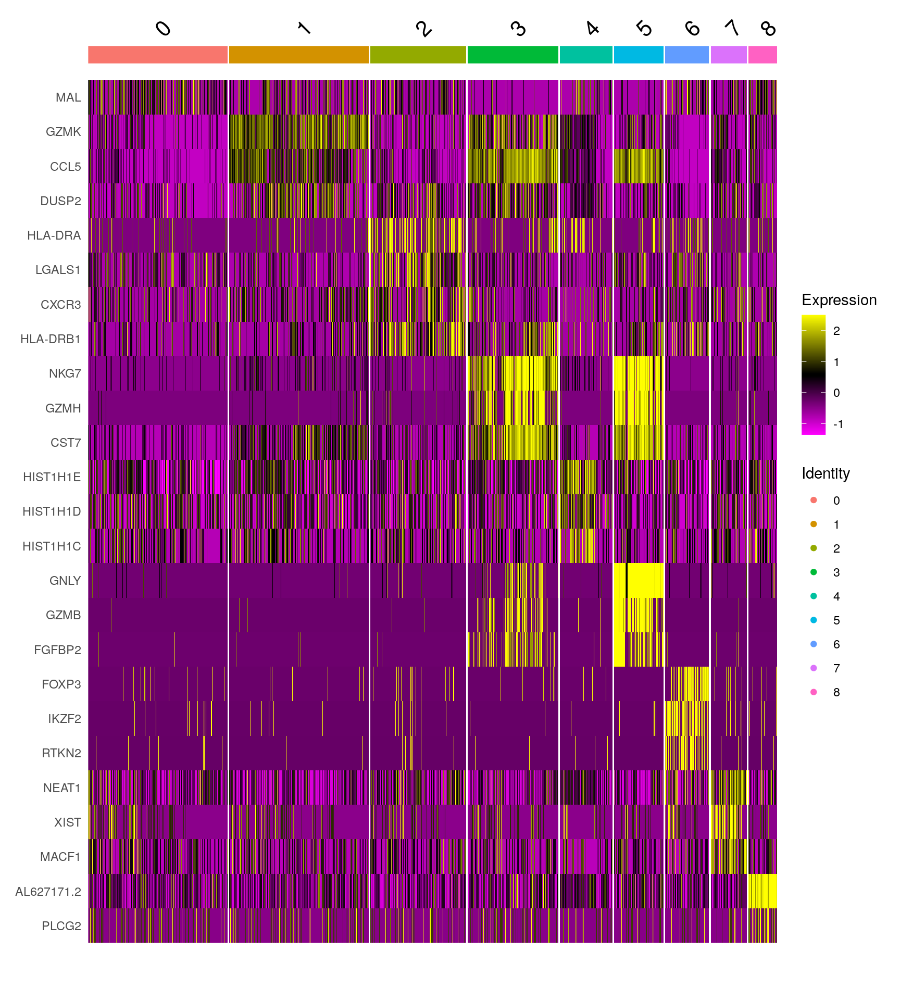

Figure 3
Last updated: 2024-12-18
Checks: 5 1
Knit directory: proj_distal/analysis/
This reproducible R Markdown analysis was created with workflowr (version 1.7.1). The Checks tab describes the reproducibility checks that were applied when the results were created. The Past versions tab lists the development history.
Great job! The global environment was empty. Objects defined in the global environment can affect the analysis in your R Markdown file in unknown ways. For reproduciblity it’s best to always run the code in an empty environment.
The command set.seed(12345) was run prior to running the code in the R Markdown file. Setting a seed ensures that any results that rely on randomness, e.g. subsampling or permutations, are reproducible.
Great job! Recording the operating system, R version, and package versions is critical for reproducibility.
Nice! There were no cached chunks for this analysis, so you can be confident that you successfully produced the results during this run.
Great job! Using relative paths to the files within your workflowr project makes it easier to run your code on other machines.
Tracking code development and connecting the code version to the results is critical for reproducibility. To start using Git, open the Terminal and type git init in your project directory.
This project is not being versioned with Git. To obtain the full reproducibility benefits of using workflowr, please see ?wflow_start.
# scRNA-seq
library(Seurat)
#packageVersion("Seurat")
# Plotting
library("ggplot2")
# Presentation
library("knitr")
# Others
library("rstatix")
library('scales')
library("readxl")source(here::here("R/00_generalDeps.R"))
source(here::here("R/output.R"))Introduction
In this document we are going to perform clustering and plotting figure 3 panel B C & E, Supplementary figure 5 and Supplementary figure 6 using Seurat.
Seurat -Integration by harmony
Parse TCR
# # Function parser TCR cellRanger output
# # Add Clonotypes functions
# add_clonotype <- function(tcr_prefix, seurat_obj, type,num){
# vdj_file=file.path(tcr_prefix,"filtered_contig_annotations.csv")
# if(file.exists(vdj_file)){
# res <- tryCatch({
# tcr <- read.csv(vdj_file)
#
# # Extract all informations of V(d)J and c genes per barcode
# if(type =='b'){
# tcr <- as.data.frame(format_b_line(tcr))
# } else if (type == 't'){
# tcr <- as.data.frame(format_t_line(tcr))
# }
#
# # Clonotype-centric info.
# clono <- read.csv(paste(tcr_prefix,"clonotypes.csv", sep="/"))
# clono <- clono[, c("clonotype_id", "cdr3s_aa", "proportion")]
# colnames(clono) <- paste(type, colnames(clono), sep="_")
# # Slap the AA sequences onto our original table by clonotype_id.
# tcr <- merge(tcr, clono,by.x='clonotype_ID', by.y=paste(type,'clonotype_id',sep='_'))
# row.names(tcr) <- paste(tcr$barcode,'_',num,sep='')
# tcr$barcode <- NULL
# # Add to the Seurat object's metadata.
# clono_seurat <- AddMetaData(object=seurat_obj, metadata=tcr)
# return(clono_seurat)
# }, error = function(e) {
# print(e)
# return(seurat_obj)
# })
# } else {
# print(paste('Cannot find file : ',vdj_file))
# }
# return(seurat_obj)
# }
#
# #Function format TCR output
# format_t_line <- function(tcr){
# list_barcode <- unique(tcr$barcode)
# vdj_list <- c()
# for(barcode in unique(tcr$barcode)){
# list_bc <- tcr[tcr$barcode==barcode,]
# clonoID <- unique(list_bc$raw_clonotype_id)
# TCRID <- paste(paste(list_bc$chain,paste(list_bc$v_gene,list_bc$d_gene,list_bc$j_gene,list_bc$c_gene,sep=';'),sep=':'),collapse=' ')
# TR_list <- list()
# TR_list[['TRA']] <- list_bc$chain[list_bc$chain=='TRA']
# TR_list[['TRAV']] <- list_bc$v_gene[list_bc$chain=='TRA' & list_bc$v_gene!='' ]
# TR_list[['TRAD']] <- list_bc$d_gene[list_bc$chain=='TRA' & list_bc$d_gene!='' ]
# TR_list[['TRAJ']] <- list_bc$j_gene[list_bc$chain=='TRA' & list_bc$j_gene!='' ]
# TR_list[['TRAC']]<- list_bc$c_gene[list_bc$chain=='TRA' & list_bc$c_gene!='' ]
#
# TR_list[['TRB']] <- list_bc$chain[list_bc$chain=='TRB']
# TR_list[['TRBV']] <- list_bc$v_gene[list_bc$chain=='TRB' & list_bc$v_gene!='' ]
# TR_list[['TRBD']] <- list_bc$d_gene[list_bc$chain=='TRB' & list_bc$d_gene!='' ]
# TR_list[['TRBJ']] <- list_bc$j_gene[list_bc$chain=='TRB' & list_bc$j_gene!='' ]
# TR_list[['TRBC']]<- list_bc$c_gene[list_bc$chain=='TRB' & list_bc$c_gene!='' ]
#
# TR_list_out <- c()
# names_out <- c()
# for(tr in names(TR_list)){
# if(length(TR_list[[tr]])==1){
# TR_list_out <- c(TR_list_out,TR_list[[tr]][1],NA)
# } else if (length(TR_list[[tr]])==0){
# TR_list_out <- c(TR_list_out,NA,NA)
# } else {
# TR_list_out <- c(TR_list_out,TR_list[[tr]])
# }
# names_out <- c(names_out,paste(tr,c('1','2'),sep='_'))
# names(TR_list_out) <- names_out
# }
#
# vdj_list <- rbind(vdj_list,c('barcode'=barcode,'TCR_ID'=TCRID,TR_list_out,'clonotype_ID'=clonoID))
#
# }
# return(vdj_list)
# }Load matrices
# # Load Matrices and remove TCR genes from it
# mat_v1<-Read10X(data.dir="CellRanger/AmR053_V1_Multi/sample_filtered_feature_bc_matrix",gene.column=2,unique.features=TRUE)
# colnames(mat_v1)<-paste(colnames(mat_v1),'1',sep='_')
# mat_v1 <- mat_v1[grep("^TRA[JV]|^TRB[JV]|^TRG[JV]|^TRD[JV]",row.names(mat_v1),invert=TRUE),]
# mat_v2<-Read10X(data.dir='CellRanger/AmR053_V2_Multi/sample_filtered_feature_bc_matrix',gene.column=2,unique.features=TRUE)
# colnames(mat_v2)<-paste(colnames(mat_v2),'2',sep='_')
# mat_v2 <- mat_v2[grep("^TRA[JV]|^TRB[JV]|^TRG[JV]|^TRD[JV]",row.names(mat_v2),invert=TRUE),]
# mat_v3<-Read10X(data.dir='CellRanger/AmR053_V3_Multi/sample_filtered_feature_bc_matrix',gene.column=2,unique.features=TRUE)
# colnames(mat_v3)<-paste(colnames(mat_v3),'3',sep='_')
# mat_v3 <- mat_v3[grep("^TRA[JV]|^TRB[JV]|^TRG[JV]|^TRD[JV]",row.names(mat_v3),invert=TRUE),]
# mat_v4<-Read10X(data.dir='CellRanger/AmR053_V4_Multi/sample_filtered_feature_bc_matrix',gene.column=2,unique.features=TRUE)
# colnames(mat_v4)<-paste(colnames(mat_v4),'4',sep='_')
# mat_v4 <- mat_v4[grep("^TRA[JV]|^TRB[JV]|^TRG[JV]|^TRD[JV]",row.names(mat_v4),invert=TRUE),]Setup the Seurat Object
# # Create Seurat objects from matrices and add TCR metadata
# amr_v1 <- CreateSeuratObject(counts = mat_v1, project = "AmR053_V1", min.cell=3,min.features=200)
# amr_v1$samples <- 'V1'
# amr_v1 <- add_clonotype('CellRanger/AmR053_V1_Multi/vdj_t', amr_v1, "t",'1')
# amr_v2 <- CreateSeuratObject(counts = mat_v2, project = "AmR053_V2", min.cell=3,min.features=200)
# amr_v2$samples <- 'V2'
# amr_v2 <- add_clonotype('CellRanger/AmR053_V2_Multi/vdj_t', amr_v2, "t",'2')
# amr_v3 <- CreateSeuratObject(counts = mat_v3, project = "AmR053_V3", min.cell=3,min.features=200)
# amr_v3$samples <- 'V3'
# amr_v3 <- add_clonotype('CellRanger/AmR053_V3_Multi/vdj_t', amr_v3, "t",'3')
# amr_v4 <- CreateSeuratObject(counts = mat_v4, project = "AmR053_V4", min.cell=3,min.features=200)
# amr_v4$samples <- 'V4'
# amr_v4<- add_clonotype('CellRanger/AmR053_V4_Multi/vdj_t', amr_v4, "t",'4')
# amr_list <- list('v1'=amr_v1, 'v2'=amr_v2,'v3'=amr_v3,'v4'=amr_v4)Integration
# for(v in names(amr_list)){
# # Remove doublet based on TCR annotation
# #amr_list[[v]][['doubletTCR']] <- !(is.na(amr_list[[v]][['TRA_2']]) & is.na(amr_list[[v]][['TRB_2']]))
# # Add mitochondrial genes percentage
# amr_list[[v]][['percent.mt']] <- PercentageFeatureSet(amr_list[[v]],pattern="^[MTmt]{2}-")
# # Add rebosomal genes percentage
# amr_list[[v]][['percent.rb']] <- PercentageFeatureSet(amr_list[[v]],pattern="^RP[SL][[:digit:]]|^RPLP[[:digit:]]|^RPSA")
# # Subset object on number of genes per cells and TCR doublet
# amr_list[[v]] <-subset(amr_list[[v]],subset=nFeature_RNA > 500 & nFeature_RNA < 4000 & percent.mt < 5)# & doubletTCR==FALSE)
# # Normalise counts and regress on precentage of ribosomal genes
# amr_list[[v]] <- SCTransform(amr_list[[v]], vars.to.regress = "percent.rb", verbose = FALSE)
# }
# # Calculate integration features
# integ_feat <- SelectIntegrationFeatures(amr_list, nfeatures=3000)
# # Merge the four matrices
# amr_all <- merge(amr_list[['v1']], y=c(amr_list[['v2']],amr_list[['v3']],amr_list[['v4']]), project ='AMR053')
# # Integrate all data set with harmony
# VariableFeatures(amr_all) <- integ_feat
# amr_all <- RunPCA(amr_all, assay = "SCT", npcs = 50)
# amr.harmony <- RunHarmony(amr_all,"samples", assay.use='SCT',plot_convergence = FALSE)Clustering
# # Calculate clusters with resolution of 0.3
# reso=0.3
# amr.harmony <- FindNeighbors(amr.harmony, reduction = "harmony", dims = 1:13)
# amr.harmony <- FindClusters(amr.harmony, resolution = reso,graph.name='SCT_snn')
# amr.harmony <- RunUMAP(amr.harmony, reduction = "harmony", assay = 'SCT',dims = 1:13,seed.use=42)
# amr.harmony.umap <- DimPlot(amr.harmony, reduction = "umap", group.by = "seurat_clusters", pt.size = .1,ncol=2, label=TRUE, seed=42)
# umaps <- amr.harmony.umapMarkers HM
# #Indentify marker genes for each cluster
# DefaultAssay(amr.harmony) <- 'SCT'
# amr.harmony<-ScaleData(amr.harmony, features = row.names(amr.harmony))
# amr.harmony <- PrepSCTFindMarkers(amr.harmony, assay = "SCT", verbose = TRUE)
# amr.harmony.mkrs <- FindAllMarkers(amr.harmony, only.pos = TRUE, min.pct = 0.25, logfc.threshold = 0.25)
# amr.harmony.mkrs_padj <- amr.harmony.mkrs[amr.harmony.mkrs$p_val_adj <0.01 ,]
# amr.harmony.mkrs_padj %>% group_by(cluster) %>% top_n(n = 5, wt = avg_log2FC) -> top5
# heatmap.mkrs <- DoHeatmap(amr.harmony, features=top5$gene, group.by='seurat_clusters')Markers DP
# list_feat=c('MAL','AQP3','TCF7','CCL5','GZMK','GZMA','HLA-DRA','LGALS1','CXCR3','NKG7','GZMH','PLEK','HIST1H1E','HIST1H1D','COTL1','GNLY','GZMB','PRF1','FOXP3','IKZF2','RTKN2','XIST','NEAT1','MACF1','AL627171.2','PLCG2','MT-ND6')
# dot.mkrs <- DotPlot(amr.harmony,features=list_feat, cols='RdBu', dot.scale=12) + RotatedAxis() + ggtitle("Marker genes") + ylab('Clusters')Module score
MS violin
Azimuth
# #Cluster annotation with azimuth, load azimuth annotation from previous run v0.4.6
# DefaultAssay(amr.harmony) <- 'SCT'
# Idents(amr.harmony) <- 'seurat_clusters'
# amr.harmony <- RunAzimuth(amr.harmony, reference = "pbmcref", assay='SCT')
# azm_plot <- DimPlot(amr.harmony, reduction='umap', split.by='predicted.celltype.l2',ncol=5,seed=42)Saving
# saveRDS(amr.harmony,file=here::here("data/processed/AmR053_harmony_azimuth_V4regRB.rds"))filt_path <- here::here("data/processed/AmR053_harmony_azimuth_V4regRB.rds")Loading seurat object processed
if (file.exists(filt_path)) {
amr.harmony <- readRDS(filt_path)
} else {
stop("Figure 3 dataset is missing. ",
"Please check Input first.",
call. = FALSE)
}Figure 3
Panel B
fig <- DimPlot(amr.harmony, reduction = "umap", seed=42, group.by = "seurat_clusters", pt.size = .1,ncol=1, label=TRUE) + ggtitle(paste0("seurat_clusters: ", length(amr.harmony$seurat_clusters)))
dir.create(here::here("output", DOCNAME), showWarnings = FALSE)
ggsave(here::here("output", DOCNAME, "figure3-panelB.pdf"), fig,
width = 7, height = 6, scale = 1)
ggsave(here::here("output", DOCNAME, "figure3-panelB.png"), fig,
width = 7, height = 6, scale = 1)
figPanel C
DefaultAssay(amr.harmony) <- 'SCT'
amr.harmony.mkrs <- FindAllMarkers(amr.harmony,assay='SCT', only.pos = TRUE, min.pct = 0.25, logfc.threshold = 0.25)
amr.harmony.mkrs_padj <- amr.harmony.mkrs[amr.harmony.mkrs$p_val_adj <0.01 ,]
list_feat<- c()
for(clust in unique(amr.harmony.mkrs_padj$cluster)){
top_gene <- subset(amr.harmony.mkrs_padj,cluster==clust)$gene
list_feat <- c(list_feat,head(top_gene[!top_gene %in% list_feat],3))
}
DotPlot(amr.harmony, features=list_feat, cols='RdBu') + RotatedAxis() + ggtitle("Marker genes") + ylab('Clusters') +theme(axis.text.x = element_text(angle = 90, hjust=1))list_feat=c('MAL','GZMK', 'CCL5','DUSP2','HLA-DRA','LGALS1','CXCR3','HLA-DRB1','NKG7','GZMH','CST7','HIST1H1E','HIST1H1D','HIST1H1C','GNLY','GZMB','FGFBP2','FOXP3','IKZF2','RTKN2','NEAT1','XIST','MACF1','AL627171.2','PLCG2')
fig <- DotPlot(amr.harmony, features=list_feat, cols='RdBu') + RotatedAxis() + ggtitle("Marker genes") + ylab('Clusters') +theme(axis.text.x = element_text(angle = 90, hjust=1))
dir.create(here::here("output", DOCNAME), showWarnings = FALSE)
ggsave(here::here("output", DOCNAME, "figure3-panelC.pdf"), fig,
width = 9, height = 6, scale = 1)
ggsave(here::here("output", DOCNAME, "figure3-panelC.png"), fig,
width = 9, height = 6, scale = 1)
figPanel E
DefaultAssay(amr.harmony) <- 'SCT'
#Genes module autoreactivity
my_data <- read_excel(paste0(here::here("data/processed/amR053_List_features_genes_Update_11092024.xlsx")), sheet = "autoreact", col_names = F)
colnames(my_data) <- 'autoreact'
amr.harmony <- AddModuleScore(amr.harmony, features=list(my_data$autoreact), name='auto_reactivity', search=TRUE)
#Genes module H1N1
my_data <- read_excel(paste0(here::here("data/processed/amR053_List_features_genes_Update_11092024.xlsx")), sheet = "h1n1", col_names = F)
colnames(my_data) <- 'h1n1'
amr.harmony <- AddModuleScore(amr.harmony, features=list(my_data$h1n1), name='H1N1', search=TRUE)
# Feature plot auto reactivity highlight top 5%
top95p_auto <- tail(quantile(t(amr.harmony[[paste('auto_reactivity','1',sep='')]]),seq(0,1,0.05)),2)[1]
top_cells <- colnames(amr.harmony)[t(amr.harmony[[paste('auto_reactivity','1',sep='')]]) > top95p_auto]
pt_size_set <- rep(0.01, dim(amr.harmony)[2])
names(pt_size_set) <- colnames(amr.harmony)
pt_size_set[top_cells] <- 1
ft_modlist_auto <-FeaturePlot(amr.harmony, features=paste('auto_reactivity','1',sep=''), label=TRUE, pt.size=pt_size_set) + scale_colour_gradientn(colours=rev(brewer.pal(n=11, name="RdBu"))) + labs(title = "", subtitle = "Gene set score:\nauto-reactivity") + theme(plot.subtitle = element_text(size = 12))
#ft_modlist_auto
# Feature plot H1N1 highlight top 5%
top95p_h1n1 <- tail(quantile(t(amr.harmony[[paste('H1N1','1',sep='')]]),seq(0,1,0.05)),2)[1]
top_cells <- colnames(amr.harmony)[t(amr.harmony[[paste('H1N1','1',sep='')]]) > top95p_h1n1]
pt_size_set <- rep(0.01, dim(amr.harmony)[2])
names(pt_size_set) <- colnames(amr.harmony)
pt_size_set[top_cells] <- 1
ft_modlist_h1n1 <- FeaturePlot(amr.harmony, features=paste('H1N1','1',sep=''), label=TRUE, pt.size=pt_size_set) + scale_colour_gradientn(colours=rev(brewer.pal(n=11, name="RdBu"))) + labs(title = "", subtitle = "Gene set score:\nH1N1") +
theme(plot.subtitle = element_text(size = 12))
#ft_modlist_h1n1
# List module score violin Plot pairwise wilcoxon test
#AutoReactivity
liste_auto <- amr.harmony[[c('auto_reactivity1','seurat_clusters')]]
names(liste_auto) <- c('mod_score','clusters')
pwWlcx_auto <- pairwise_wilcox_test(liste_auto,formula=mod_score ~ clusters,p.adjust.method = "BH")
pwWlcx_auto_f = pwWlcx_auto[pwWlcx_auto$group1 %in% c(2,6)| pwWlcx_auto$group2 %in% c(2,6), ]
mod_plot_auto <- ggviolin(liste_auto, x='clusters', y='mod_score',palette=hue_pal()(10), fill='clusters') +
stat_pvalue_manual(pwWlcx_auto_f, hide.ns = FALSE, y.position=0.5, step.increase=0.05) + ggtitle('Auto Reactivity')+ theme(legend.position = 'none') + xlab("scRNA-seq clusters") + ylab("Gene set score")
#H1N1
liste_h1n1 <- amr.harmony[[c('H1N11','seurat_clusters')]]
names(liste_h1n1) <- c('mod_score','clusters')
pwWlcx_h1n1 <- pairwise_wilcox_test(liste_h1n1,formula=mod_score ~ clusters,p.adjust.method = "BH")
pwWlcx_h1n1_f = pwWlcx_h1n1[pwWlcx_h1n1$group1 %in% c(3,5)| pwWlcx_h1n1$group2 %in% c(3,5), ]
mod_plot_h1n1 <- ggviolin(liste_h1n1, x='clusters', y='mod_score',palette=hue_pal()(10), fill='clusters') +
stat_pvalue_manual(pwWlcx_h1n1_f, hide.ns = FALSE, y.position=0.5, step.increase=0.05) + ggtitle('H1N1') + theme(legend.position = 'none') + xlab("scRNA-seq clusters") + ylab("Gene set score")
fig <- plot_grid(ft_modlist_auto,ft_modlist_h1n1, mod_plot_auto, mod_plot_h1n1, nrow = 2, labels = "E")
dir.create(here::here("output", DOCNAME), showWarnings = FALSE)
ggsave(here::here("output", DOCNAME, "figure3-panelE.pdf"), fig,
width = 12, height = 10, scale = 1)
ggsave(here::here("output", DOCNAME, "figure3-panelE.png"), fig,
width = 12, height = 10, scale = 1)
figSupplementary figure 10
#Indentify marker genes for each cluster
amr.harmony.mkrs_padj %>% group_by(cluster) %>% top_n(n = 5, wt = avg_log2FC) -> top5
#amr.harmony.mkrs_padj %>% group_by(cluster) %>% top_n(n = 5, wt = avg_log2FC) -> top5
#heatmap.mkrs <- DoHeatmap(amr.harmony, features=top5$gene, group.by='seurat_clusters')
# fig <- DoHeatmap(amr.harmony, features=top5$gene, group.by='seurat_clusters', assay = 'SCT', label = F)
# more than 30k cells, https://github.com/satijalab/seurat/issues/2724
DoHeatmap(subset(amr.harmony, downsample = 5000),
features=top5$gene, group.by='seurat_clusters',
assay = "SCT")fig <- DoHeatmap(subset(amr.harmony, downsample = 5000),
features=list_feat, group.by='seurat_clusters',
assay = "SCT")
dir.create(here::here("output", DOCNAME), showWarnings = FALSE)
ggsave(here::here("output", DOCNAME, "suppfigure10.pdf"), fig,
width = 9, height = 10, scale = 1)
ggsave(here::here("output", DOCNAME, "suppfigure10.png"), fig,
width = 9, height = 10, scale = 1)
fig
Supplementary figure 11
Idents(amr.harmony) <- 'predicted.celltype.l2'
fig <- DimPlot(amr.harmony, split.by='predicted.celltype.l2',ncol=4,seed=42)
dir.create(here::here("output", DOCNAME), showWarnings = FALSE)
ggsave(here::here("output", DOCNAME, "suppfigure11.pdf"), fig,
width = 10, height = 9, scale = 1)
ggsave(here::here("output", DOCNAME, "suppfigure11.png"), fig,
width = 10, height = 9, scale = 1)
fig
Supplementary figure 12
ft_modlist = list()
mod_plot_list = list()
for (sname in c("Poon_2022_Lung_CD4_TRM","Poon_2022_Skin_CD4_TRM","Poon_2022_jejunum_CD4_TRM",
"Zhang_2022_Liver_HBV_CXCL13_CD4", "Zheng_2017_Liver_HCC_CXCL13_CD4", "Argyriou_2022_Synovial_TPH", "Law_2024_Synovial_TPH")){
#Genes module
my_data <- read_excel(paste0(here::here("data/processed/amR053_List_features_genes_Update_11092024.xlsx")), sheet = sname, col_names = F)
colnames(my_data) <- sname
amr.harmony <- AddModuleScore(amr.harmony, features=list(my_data[[sname]]), name= sname, search=TRUE)
# Feature plot highlight top 5%
top95p <- tail(quantile(t(amr.harmony[[paste(sname,'1',sep='')]]),seq(0,1,0.05)),2)[1]
top_cells <- colnames(amr.harmony)[t(amr.harmony[[paste(sname,'1',sep='')]]) > top95p]
pt_size_set <- rep(0.01, dim(amr.harmony)[2])
names(pt_size_set) <- colnames(amr.harmony)
pt_size_set[top_cells] <- 1
ft_modlist[[sname]] <-FeaturePlot(amr.harmony, features=paste(sname,'1',sep=''), pt.size=pt_size_set) + scale_colour_gradientn(colours=rev(brewer.pal(n=11, name="RdBu"))) + labs(title = "", subtitle = paste0("Gene set score:\n",sname)) + theme(plot.subtitle = element_text(size = 12)) & NoLegend() & NoAxes()
# List module score violin Plot pairwise wilcoxon test
liste_tempo <- amr.harmony[[c(paste(sname,'1',sep=''),'seurat_clusters')]]
names(liste_tempo) <- c('mod_score','clusters')
pwWlcx_auto <- pairwise_wilcox_test(liste_tempo,formula=mod_score ~ clusters,p.adjust.method = "BH")
pwWlcx_auto_f = pwWlcx_auto[pwWlcx_auto$group1 %in% c(2,6)| pwWlcx_auto$group2 %in% c(2,6), ]
mod_plot_list[[sname]] <- ggviolin(liste_tempo, x='clusters', y='mod_score',palette=hue_pal()(10), fill='clusters') +
stat_pvalue_manual(pwWlcx_auto_f, hide.ns = FALSE, y.position=0.5, step.increase=0.05) + ggtitle(sname)+ theme(legend.position = 'none') + xlab("scRNA-seq clusters") + ylab("Gene set score")
}
fig <- plot_grid(mod_plot_list[[1]], ft_modlist[[1]],
mod_plot_list[[2]], ft_modlist[[2]],
mod_plot_list[[3]], ft_modlist[[3]],
mod_plot_list[[4]], ft_modlist[[4]],
mod_plot_list[[5]], ft_modlist[[5]],
mod_plot_list[[6]], ft_modlist[[6]],
mod_plot_list[[7]], ft_modlist[[7]],
nrow = 3, labels = "A")
dir.create(here::here("output", DOCNAME), showWarnings = FALSE)
ggsave(here::here("output", DOCNAME, "suppfigure12.pdf"), fig,
width = 18, height = 12, scale = 1)
ggsave(here::here("output", DOCNAME, "suppfigure12.png"), fig,
width = 18, height = 12, scale = 1)
figOutput files
This table describes the output files produced by this document. Right click and Save Link As… to download the results.
saveRDS(amr.harmony, here::here("data/processed/05-sc_seurat.rds"))dir.create(here::here("output", DOCNAME), showWarnings = FALSE)
knitr::kable(data.frame(
File = c(
getDownloadLink2("figure3-panelB.png", str_sub(here::here("output", DOCNAME),2,-1)),
getDownloadLink2("figure3-panelB.pdf", str_sub(here::here("output", DOCNAME),2,-1)),
getDownloadLink2("figure3-panelC.png", str_sub(here::here("output", DOCNAME),2,-1)),
getDownloadLink2("figure3-panelC.pdf", str_sub(here::here("output", DOCNAME),2,-1)),
getDownloadLink2("figure3-panelE.png", str_sub(here::here("output", DOCNAME),2,-1)),
getDownloadLink2("figure3-panelE.pdf", str_sub(here::here("output", DOCNAME),2,-1)),
getDownloadLink2("suppfigure10.png", str_sub(here::here("output", DOCNAME),2,-1)),
getDownloadLink2("suppfigure10.pdf", str_sub(here::here("output", DOCNAME),2,-1)),
getDownloadLink2("suppfigure11.png", str_sub(here::here("output", DOCNAME),2,-1)),
getDownloadLink2("suppfigure11.pdf", str_sub(here::here("output", DOCNAME),2,-1)),
getDownloadLink2("suppfigure12.png", str_sub(here::here("output", DOCNAME),2,-1)), # bug one "/" plus
getDownloadLink2("suppfigure12.pdf", str_sub(here::here("output", DOCNAME),2,-1))
),
Description = c(
"Figure 3 panel B (PNG)",
"Figure 3 panel B (PDF)",
"Figure 3 panel C (PNG)",
"Figure 3 panel C (PDF)",
"Figure 3 panel E (PNG)",
"Figure 3 panel E (PDF)",
"Supplementary Figure 10 (PNG)",
"Supplementary Figure 10 (PDF)",
"Supplementary Figure 11 (PNG)",
"Supplementary Figure 11 (PDF)",
"Supplementary Figure 12 (PNG)",
"Supplementary Figure 12 (PDF)"
)
))| File | Description |
|---|---|
| figure3-panelB.png | Figure 3 panel B (PNG) |
| figure3-panelB.pdf | Figure 3 panel B (PDF) |
| figure3-panelC.png | Figure 3 panel C (PNG) |
| figure3-panelC.pdf | Figure 3 panel C (PDF) |
| figure3-panelE.png | Figure 3 panel E (PNG) |
| figure3-panelE.pdf | Figure 3 panel E (PDF) |
| suppfigure10.png | Supplementary Figure 10 (PNG) |
| suppfigure10.pdf | Supplementary Figure 10 (PDF) |
| suppfigure11.png | Supplementary Figure 11 (PNG) |
| suppfigure11.pdf | Supplementary Figure 11 (PDF) |
| suppfigure12.png | Supplementary Figure 12 (PNG) |
| suppfigure12.pdf | Supplementary Figure 12 (PDF) |
{kind=link}
{kind=link}
{kind=link}
{kind=link}
{kind=link}
{kind=link}
Session information
devtools::session_info()─ Session info ───────────────────────────────────────────────────────────────
setting value
version R version 4.1.2 (2021-11-01)
os Ubuntu 20.04.3 LTS
system x86_64, linux-gnu
ui X11
language (EN)
collate en_US.UTF-8
ctype en_US.UTF-8
tz Etc/UTC
date 2024-12-18
pandoc 2.14.0.3 @ /usr/lib/rstudio-server/bin/pandoc/ (via rmarkdown)
─ Packages ───────────────────────────────────────────────────────────────────
package * version date (UTC) lib source
abind 1.4-5 2016-07-21 [1] RSPM (R 4.1.0)
assertthat 0.2.1 2019-03-21 [1] RSPM (R 4.1.0)
backports 1.4.1 2021-12-13 [1] RSPM (R 4.1.0)
brio 1.1.3 2021-11-30 [1] RSPM (R 4.1.0)
broom 0.7.12 2022-01-28 [1] RSPM (R 4.1.0)
bslib 0.3.1 2021-10-06 [1] RSPM (R 4.1.0)
cachem 1.0.6 2021-08-19 [1] RSPM (R 4.1.0)
callr 3.7.0 2021-04-20 [1] RSPM (R 4.1.0)
car 3.0-12 2021-11-06 [1] RSPM (R 4.1.0)
carData 3.0-5 2022-01-06 [1] RSPM (R 4.1.0)
cellranger 1.1.0 2016-07-27 [1] RSPM (R 4.1.0)
cli 3.6.1 2023-03-23 [1] RSPM (R 4.1.0)
cluster 2.1.2 2021-04-17 [2] CRAN (R 4.1.2)
codetools 0.2-18 2020-11-04 [2] CRAN (R 4.1.2)
colorspace 2.0-3 2022-02-21 [1] RSPM (R 4.1.0)
cowplot 1.1.1 2020-12-30 [1] RSPM (R 4.1.0)
crayon 1.5.0 2022-02-14 [1] RSPM (R 4.1.0)
data.table 1.14.2 2021-09-27 [1] RSPM (R 4.1.0)
DBI 1.1.2 2021-12-20 [1] RSPM (R 4.1.0)
deldir 1.0-6 2021-10-23 [1] RSPM (R 4.1.0)
desc 1.4.1 2022-03-06 [1] RSPM (R 4.1.0)
devtools 2.4.3 2021-11-30 [1] RSPM (R 4.1.0)
digest 0.6.29 2021-12-01 [1] RSPM (R 4.1.0)
dplyr 1.0.8 2022-02-08 [1] RSPM (R 4.1.0)
ellipsis 0.3.2 2021-04-29 [1] RSPM (R 4.1.0)
evaluate 0.15 2022-02-18 [1] RSPM (R 4.1.0)
fansi 1.0.2 2022-01-14 [1] RSPM (R 4.1.0)
fastmap 1.1.0 2021-01-25 [1] RSPM (R 4.1.0)
fitdistrplus 1.1-6 2021-09-28 [1] RSPM (R 4.1.0)
fs 1.5.2 2021-12-08 [1] RSPM (R 4.1.0)
future 1.23.0 2021-10-31 [1] RSPM (R 4.1.0)
future.apply 1.8.1 2021-08-10 [1] RSPM (R 4.1.0)
generics 0.1.2 2022-01-31 [1] RSPM (R 4.1.0)
ggplot2 * 3.4.4 2023-10-12 [1] RSPM (R 4.1.0)
ggpubr 0.4.0 2020-06-27 [1] RSPM (R 4.1.0)
ggrepel 0.9.1 2021-01-15 [1] RSPM (R 4.1.0)
ggridges 0.5.3 2021-01-08 [1] RSPM (R 4.1.0)
ggsignif 0.6.3 2021-09-09 [1] RSPM (R 4.1.0)
git2r 0.33.0 2023-11-26 [1] RSPM (R 4.1.0)
globals 0.14.0 2020-11-22 [1] RSPM (R 4.1.0)
glue 1.6.2 2022-02-24 [1] RSPM (R 4.1.0)
goftest 1.2-3 2021-10-07 [1] RSPM (R 4.1.0)
gridExtra 2.3 2017-09-09 [1] RSPM (R 4.1.0)
gtable 0.3.0 2019-03-25 [1] RSPM (R 4.1.0)
here 1.0.1 2020-12-13 [1] RSPM (R 4.1.0)
htmltools 0.5.2 2021-08-25 [1] RSPM (R 4.1.0)
htmlwidgets 1.5.4 2021-09-08 [1] RSPM (R 4.1.0)
httpuv 1.6.5 2022-01-05 [1] RSPM (R 4.1.0)
httr 1.4.2 2020-07-20 [1] RSPM (R 4.1.0)
ica 1.0-2 2018-05-24 [1] RSPM (R 4.1.0)
igraph 1.5.1 2023-08-10 [1] RSPM (R 4.1.0)
irlba 2.3.5 2021-12-06 [1] RSPM (R 4.1.0)
jquerylib 0.1.4 2021-04-26 [1] RSPM (R 4.1.0)
jsonlite 1.8.0 2022-02-22 [1] RSPM (R 4.1.0)
KernSmooth 2.23-20 2021-05-03 [2] CRAN (R 4.1.2)
knitr * 1.37 2021-12-16 [1] RSPM (R 4.1.0)
later 1.3.0 2021-08-18 [1] RSPM (R 4.1.0)
lattice 0.20-45 2021-09-22 [2] CRAN (R 4.1.2)
lazyeval 0.2.2 2019-03-15 [1] RSPM (R 4.1.0)
leiden 0.3.9 2021-07-27 [1] RSPM (R 4.1.0)
lifecycle 1.0.3 2022-10-07 [1] RSPM (R 4.1.0)
listenv 0.8.0 2019-12-05 [1] RSPM (R 4.1.0)
lmtest 0.9-39 2021-11-07 [1] RSPM (R 4.1.0)
magrittr 2.0.2 2022-01-26 [1] RSPM (R 4.1.0)
MASS 7.3-54 2021-05-03 [2] CRAN (R 4.1.2)
Matrix 1.3-4 2021-06-01 [2] CRAN (R 4.1.2)
matrixStats 0.61.0 2021-09-17 [1] RSPM (R 4.1.0)
memoise 2.0.1 2021-11-26 [1] RSPM (R 4.1.0)
mgcv 1.8-38 2021-10-06 [2] CRAN (R 4.1.2)
mime 0.12 2021-09-28 [1] RSPM (R 4.1.0)
miniUI 0.1.1.1 2018-05-18 [1] RSPM (R 4.1.0)
munsell 0.5.0 2018-06-12 [1] RSPM (R 4.1.0)
nlme 3.1-153 2021-09-07 [2] CRAN (R 4.1.2)
parallelly 1.30.0 2021-12-17 [1] RSPM (R 4.1.0)
patchwork 1.1.1 2020-12-17 [1] RSPM (R 4.1.0)
pbapply 1.5-0 2021-09-16 [1] RSPM (R 4.1.0)
pillar 1.7.0 2022-02-01 [1] RSPM (R 4.1.0)
pkgbuild 1.3.1 2021-12-20 [1] RSPM (R 4.1.0)
pkgconfig 2.0.3 2019-09-22 [1] RSPM (R 4.1.0)
pkgload 1.2.4 2021-11-30 [1] RSPM (R 4.1.0)
plotly 4.10.0 2021-10-09 [1] RSPM (R 4.1.0)
plyr 1.8.6 2020-03-03 [1] RSPM (R 4.1.0)
png 0.1-7 2013-12-03 [1] RSPM (R 4.1.0)
polyclip 1.10-0 2019-03-14 [1] RSPM (R 4.1.0)
prettyunits 1.1.1 2020-01-24 [1] RSPM (R 4.1.0)
processx 3.5.2 2021-04-30 [1] RSPM (R 4.1.0)
promises 1.2.0.1 2021-02-11 [1] RSPM (R 4.1.0)
ps 1.6.0 2021-02-28 [1] RSPM (R 4.1.0)
purrr 0.3.4 2020-04-17 [1] RSPM (R 4.1.0)
R6 2.5.1 2021-08-19 [1] RSPM (R 4.1.0)
RANN 2.6.1 2019-01-08 [1] RSPM (R 4.1.0)
RColorBrewer 1.1-2 2014-12-07 [1] RSPM (R 4.1.0)
Rcpp 1.0.8 2022-01-13 [1] RSPM (R 4.1.0)
RcppAnnoy 0.0.19 2021-07-30 [1] RSPM (R 4.1.0)
readxl * 1.3.1 2019-03-13 [1] RSPM (R 4.1.0)
remotes 2.4.2 2021-11-30 [1] RSPM (R 4.1.0)
reshape2 1.4.4 2020-04-09 [1] RSPM (R 4.1.0)
reticulate 1.23 2022-01-14 [1] RSPM (R 4.1.0)
rlang 1.1.1 2023-04-28 [1] RSPM (R 4.1.0)
rmarkdown 2.11 2021-09-14 [1] RSPM (R 4.1.0)
ROCR 1.0-11 2020-05-02 [1] RSPM (R 4.1.0)
rpart 4.1-15 2019-04-12 [2] CRAN (R 4.1.2)
rprojroot 2.0.2 2020-11-15 [1] RSPM (R 4.1.0)
rstatix * 0.7.0 2021-02-13 [1] RSPM (R 4.1.0)
rstudioapi 0.13 2020-11-12 [1] RSPM (R 4.1.0)
Rtsne 0.15 2018-11-10 [1] RSPM (R 4.1.0)
sass 0.4.0 2021-05-12 [1] RSPM (R 4.1.0)
scales * 1.2.1 2022-08-20 [1] RSPM (R 4.1.0)
scattermore 0.7 2020-11-24 [1] RSPM (R 4.1.0)
sctransform 0.3.3 2022-01-13 [1] RSPM (R 4.1.0)
sessioninfo 1.2.2 2021-12-06 [1] RSPM (R 4.1.0)
Seurat * 4.1.0 2022-01-14 [1] RSPM (R 4.1.0)
SeuratObject * 4.0.4 2021-11-23 [1] RSPM (R 4.1.0)
shiny 1.7.1 2021-10-02 [1] RSPM (R 4.1.0)
spatstat.core 2.3-2 2021-11-26 [1] RSPM (R 4.1.0)
spatstat.data 2.1-2 2021-12-17 [1] RSPM (R 4.1.0)
spatstat.geom 2.4-0 2022-03-29 [1] RSPM (R 4.1.0)
spatstat.sparse 2.1-0 2021-12-17 [1] RSPM (R 4.1.0)
spatstat.utils 2.3-0 2021-12-12 [1] RSPM (R 4.1.0)
stringi 1.7.6 2021-11-29 [1] RSPM (R 4.1.0)
stringr 1.4.0 2019-02-10 [1] RSPM (R 4.1.0)
survival 3.2-13 2021-08-24 [2] CRAN (R 4.1.2)
tensor 1.5 2012-05-05 [1] RSPM (R 4.1.0)
testthat 3.1.2 2022-01-20 [1] RSPM (R 4.1.0)
tibble 3.1.8 2022-07-22 [1] RSPM (R 4.1.0)
tidyr 1.2.0 2022-02-01 [1] RSPM (R 4.1.0)
tidyselect 1.1.2 2022-02-21 [1] RSPM (R 4.1.0)
usethis 2.1.5 2021-12-09 [1] RSPM (R 4.1.0)
utf8 1.2.2 2021-07-24 [1] RSPM (R 4.1.0)
uwot 0.1.11 2021-12-02 [1] RSPM (R 4.1.0)
vctrs 0.6.4 2023-10-12 [1] RSPM (R 4.1.0)
viridisLite 0.4.0 2021-04-13 [1] RSPM (R 4.1.0)
withr 2.5.0 2022-03-03 [1] RSPM (R 4.1.0)
workflowr 1.7.1 2023-08-23 [1] RSPM (R 4.1.0)
xfun 0.30 2022-03-02 [1] RSPM (R 4.1.0)
xtable 1.8-4 2019-04-21 [1] RSPM (R 4.1.0)
yaml 2.3.5 2022-02-21 [1] RSPM (R 4.1.0)
zoo 1.8-9 2021-03-09 [1] RSPM (R 4.1.0)
[1] /usr/local/lib/R/site-library
[2] /usr/local/lib/R/library
──────────────────────────────────────────────────────────────────────────────
sessionInfo()R version 4.1.2 (2021-11-01)
Platform: x86_64-pc-linux-gnu (64-bit)
Running under: Ubuntu 20.04.3 LTS
Matrix products: default
BLAS/LAPACK: /usr/lib/x86_64-linux-gnu/openblas-pthread/libopenblasp-r0.3.8.so
locale:
[1] LC_CTYPE=en_US.UTF-8 LC_NUMERIC=C LC_TIME=en_US.UTF-8 LC_COLLATE=en_US.UTF-8 LC_MONETARY=en_US.UTF-8 LC_MESSAGES=en_US.UTF-8 LC_PAPER=en_US.UTF-8 LC_NAME=C
[9] LC_ADDRESS=C LC_TELEPHONE=C LC_MEASUREMENT=en_US.UTF-8 LC_IDENTIFICATION=C
attached base packages:
[1] stats4 stats graphics grDevices utils datasets methods base
other attached packages:
[1] scales_1.2.1 rstatix_0.7.0 EnhancedVolcano_1.12.0 ggrepel_0.9.1 RColorBrewer_1.1-2 muscat_1.9.2 scater_1.22.0 scuttle_1.4.0
[9] SingleCellExperiment_1.16.0 DESeq2_1.34.0 SummarizedExperiment_1.24.0 Biobase_2.54.0 MatrixGenerics_1.6.0 matrixStats_0.61.0 GenomicRanges_1.46.1 GenomeInfoDb_1.30.1
[17] IRanges_2.28.0 S4Vectors_0.32.3 BiocGenerics_0.40.0 pheatmap_1.0.12 forcats_0.5.1 stringr_1.4.0 purrr_0.3.4 readr_2.1.1
[25] tidyr_1.2.0 tibble_3.1.8 tidyverse_1.3.1 jsonlite_1.8.0 glue_1.6.2 dplyr_1.0.8 DT_0.22 readxl_1.3.1
[33] knitr_1.37 cowplot_1.1.1 ggpubr_0.4.0 ggplot2_3.4.4 SeuratObject_4.0.4 Seurat_4.1.0
loaded via a namespace (and not attached):
[1] scattermore_0.7 ragg_1.2.2 bit64_4.0.5 irlba_2.3.5 DelayedArray_0.20.0 data.table_1.14.2 rpart_4.1-15 KEGGREST_1.34.0 RCurl_1.98-1.6
[10] doParallel_1.0.16 generics_0.1.2 ScaledMatrix_1.2.0 callr_3.7.0 usethis_2.1.5 RSQLite_2.2.9 RANN_2.6.1 future_1.23.0 bit_4.0.4
[19] tzdb_0.2.0 spatstat.data_2.1-2 xml2_1.3.3 lubridate_1.8.0 httpuv_1.6.5 assertthat_0.2.1 viridis_0.6.2 xfun_0.30 jquerylib_0.1.4
[28] hms_1.1.1 evaluate_0.15 promises_1.2.0.1 fansi_1.0.2 progress_1.2.2 caTools_1.18.2 dbplyr_2.1.1 igraph_1.5.1 DBI_1.1.2
[37] geneplotter_1.72.0 htmlwidgets_1.5.4 spatstat.geom_2.4-0 ellipsis_0.3.2 backports_1.4.1 annotate_1.72.0 deldir_1.0-6 sparseMatrixStats_1.6.0 vctrs_0.6.4
[46] remotes_2.4.2 here_1.0.1 ROCR_1.0-11 abind_1.4-5 cachem_1.0.6 withr_2.5.0 sctransform_0.3.3 prettyunits_1.1.1 goftest_1.2-3
[55] cluster_2.1.2 lazyeval_0.2.2 crayon_1.5.0 genefilter_1.76.0 labeling_0.4.2 edgeR_3.36.0 pkgconfig_2.0.3 pkgload_1.2.4 nlme_3.1-153
[64] vipor_0.4.5 devtools_2.4.3 blme_1.0-5 rlang_1.1.1 globals_0.14.0 lifecycle_1.0.3 miniUI_0.1.1.1 extrafontdb_1.0 modelr_0.1.8
[73] rsvd_1.0.5 rprojroot_2.0.2 ggrastr_1.0.1 cellranger_1.1.0 polyclip_1.10-0 lmtest_0.9-39 Matrix_1.3-4 carData_3.0-5 boot_1.3-28
[82] zoo_1.8-9 reprex_2.0.1 beeswarm_0.4.0 processx_3.5.2 ggridges_0.5.3 GlobalOptions_0.1.2 png_0.1-7 viridisLite_0.4.0 rjson_0.2.21
[91] bitops_1.0-7 KernSmooth_2.23-20 Biostrings_2.62.0 workflowr_1.7.1 blob_1.2.2 DelayedMatrixStats_1.16.0 shape_1.4.6 parallelly_1.30.0 ggsignif_0.6.3
[100] beachmat_2.10.0 memoise_2.0.1 magrittr_2.0.2 plyr_1.8.6 ica_1.0-2 gplots_3.1.1 zlibbioc_1.40.0 compiler_4.1.2 ash_1.0-15
[109] clue_0.3-60 lme4_1.1-28 fitdistrplus_1.1-6 cli_3.6.1 XVector_0.34.0 lmerTest_3.1-3 listenv_0.8.0 ps_1.6.0 patchwork_1.1.1
[118] pbapply_1.5-0 TMB_1.7.22 MASS_7.3-54 mgcv_1.8-38 tidyselect_1.1.2 stringi_1.7.6 textshaping_0.3.6 highr_0.9 proj4_1.0-11
[127] yaml_2.3.5 BiocSingular_1.10.0 locfit_1.5-9.4 grid_4.1.2 sass_0.4.0 tools_4.1.2 future.apply_1.8.1 parallel_4.1.2 circlize_0.4.13
[136] rstudioapi_0.13 git2r_0.33.0 foreach_1.5.1 gridExtra_2.3 farver_2.1.0 Rtsne_0.15 digest_0.6.29 shiny_1.7.1 Rcpp_1.0.8
[145] car_3.0-12 broom_0.7.12 ggalt_0.4.0 later_1.3.0 RcppAnnoy_0.0.19 httr_1.4.2 AnnotationDbi_1.56.2 ComplexHeatmap_2.10.0 colorspace_2.0-3
[154] brio_1.1.3 rvest_1.0.2 XML_3.99-0.8 fs_1.5.2 tensor_1.5 reticulate_1.23 splines_4.1.2 uwot_0.1.11 spatstat.utils_2.3-0
[163] systemfonts_1.0.4 sessioninfo_1.2.2 plotly_4.10.0 xtable_1.8-4 nloptr_2.0.0 testthat_3.1.2 R6_2.5.1 pillar_1.7.0 htmltools_0.5.2
[172] mime_0.12 fastmap_1.1.0 minqa_1.2.4 BiocParallel_1.28.3 BiocNeighbors_1.12.0 codetools_0.2-18 maps_3.4.0 pkgbuild_1.3.1 utf8_1.2.2
[181] bslib_0.3.1 lattice_0.20-45 spatstat.sparse_2.1-0 pbkrtest_0.5.1 numDeriv_2016.8-1.1 curl_4.3.2 ggbeeswarm_0.6.0 leiden_0.3.9 gtools_3.9.2
[190] Rttf2pt1_1.3.10 survival_3.2-13 limma_3.50.1 glmmTMB_1.1.2.3 rmarkdown_2.11 desc_1.4.1 munsell_0.5.0 GetoptLong_1.0.5 GenomeInfoDbData_1.2.7
[199] iterators_1.0.13 variancePartition_1.24.0 haven_2.4.3 reshape2_1.4.4 gtable_0.3.0 extrafont_0.17 spatstat.core_2.3-2